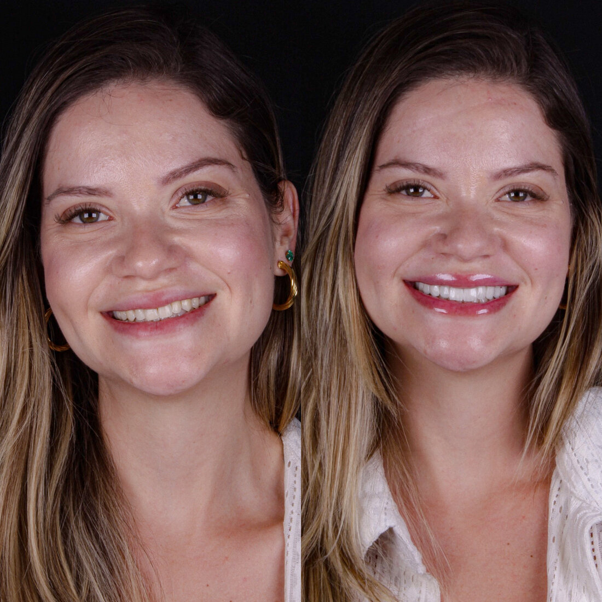
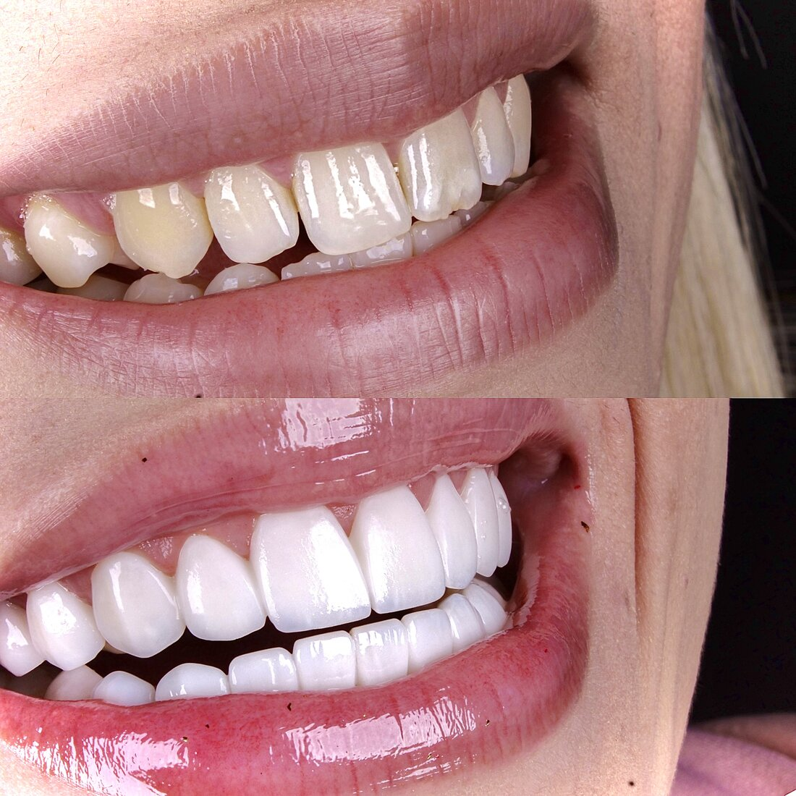
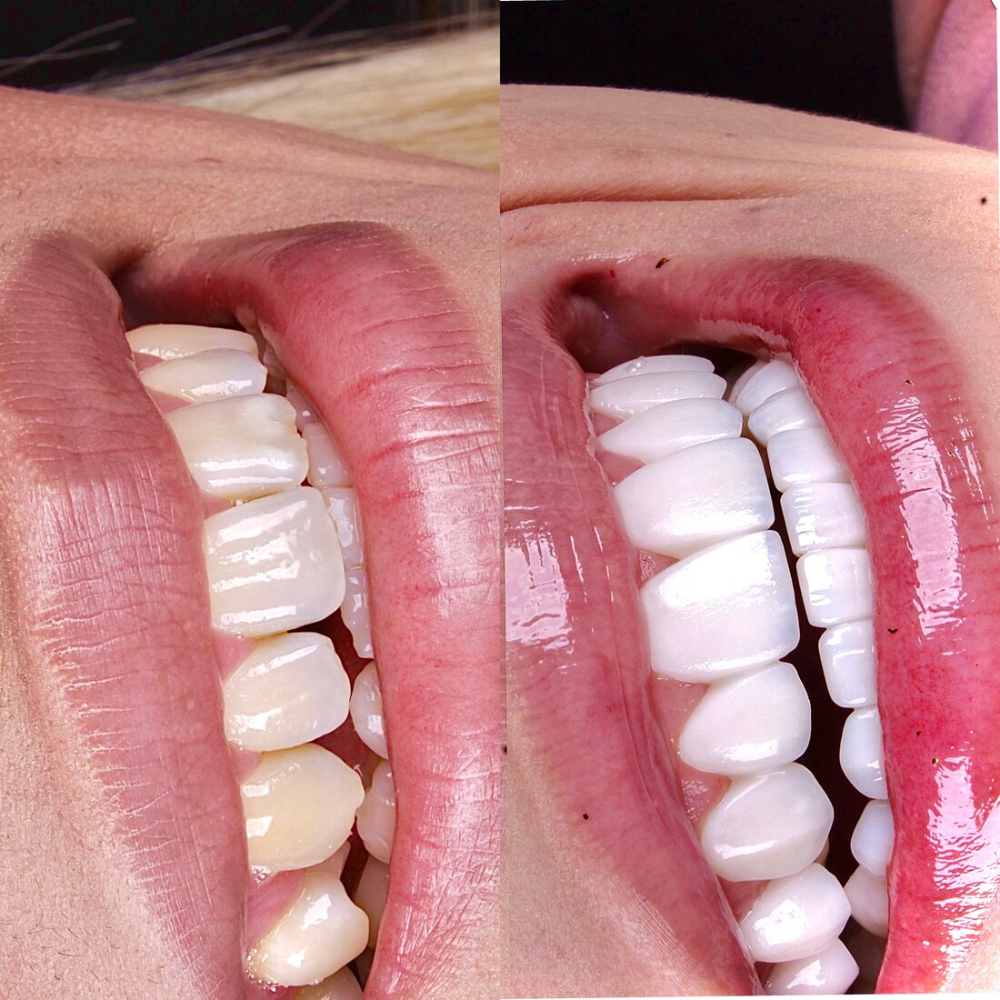
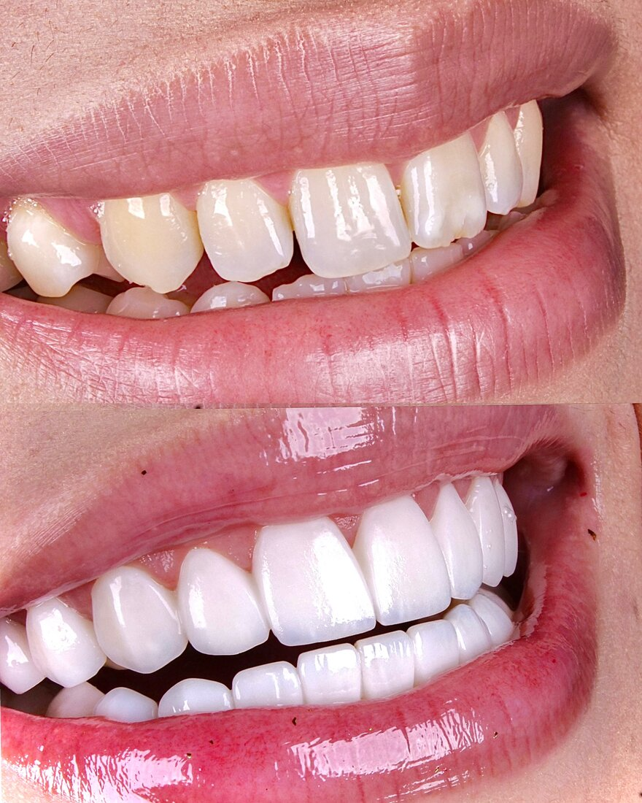
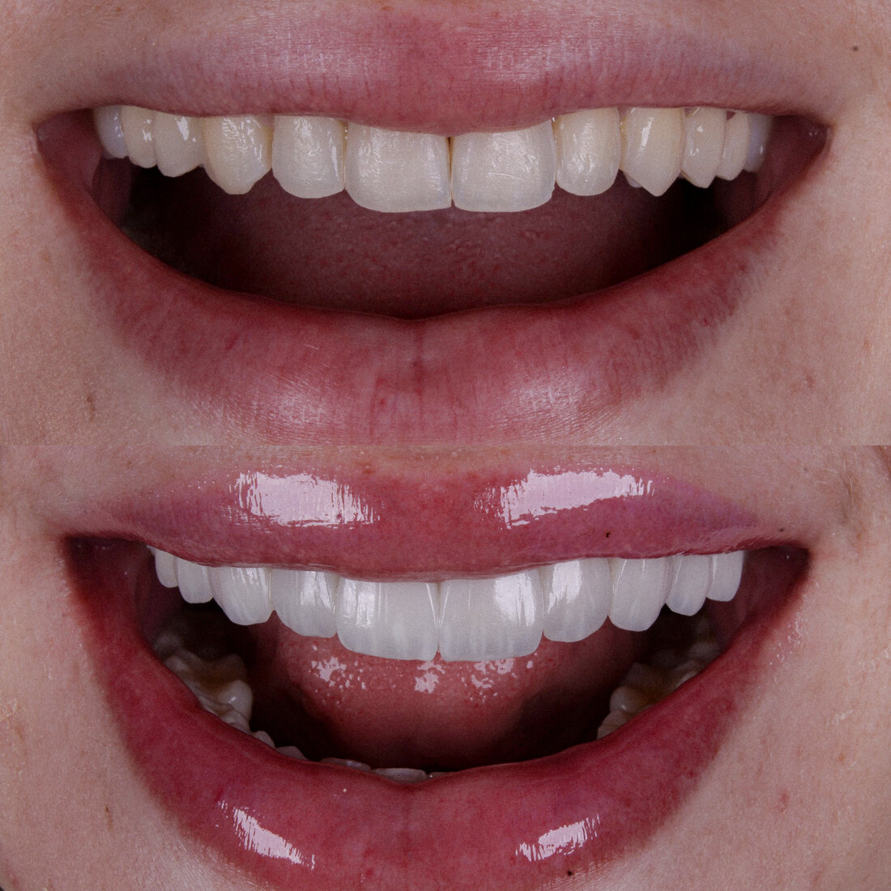
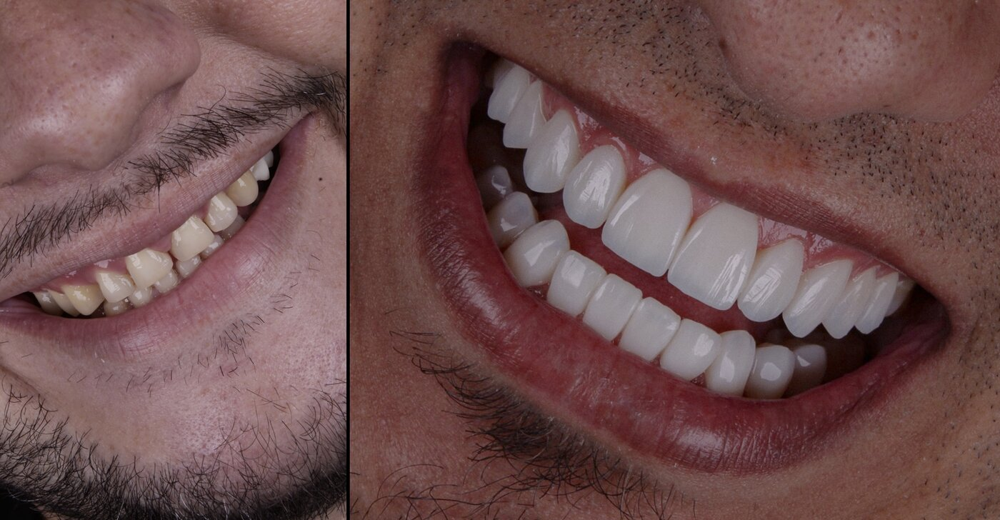
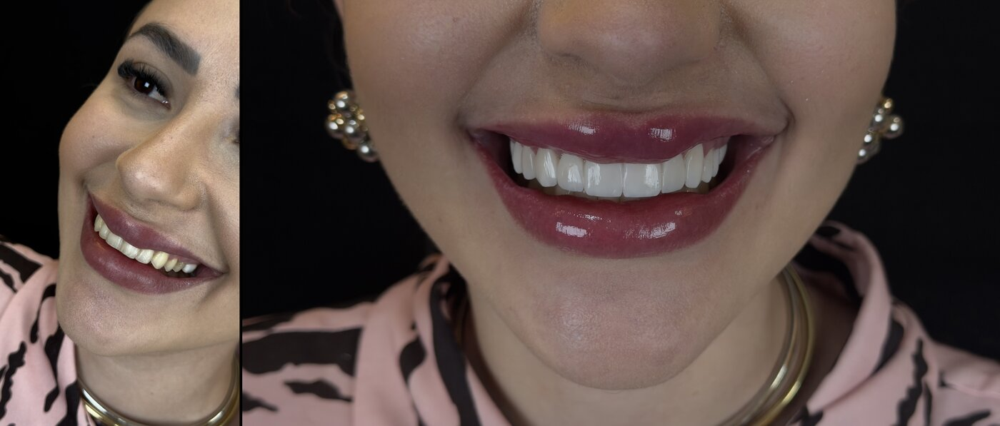
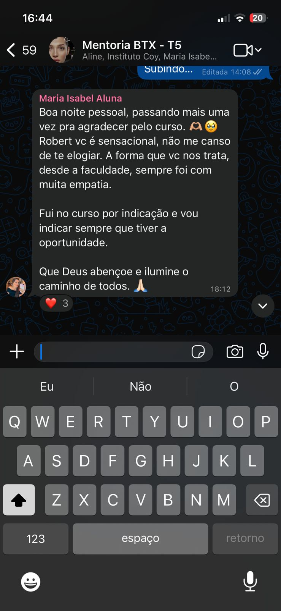
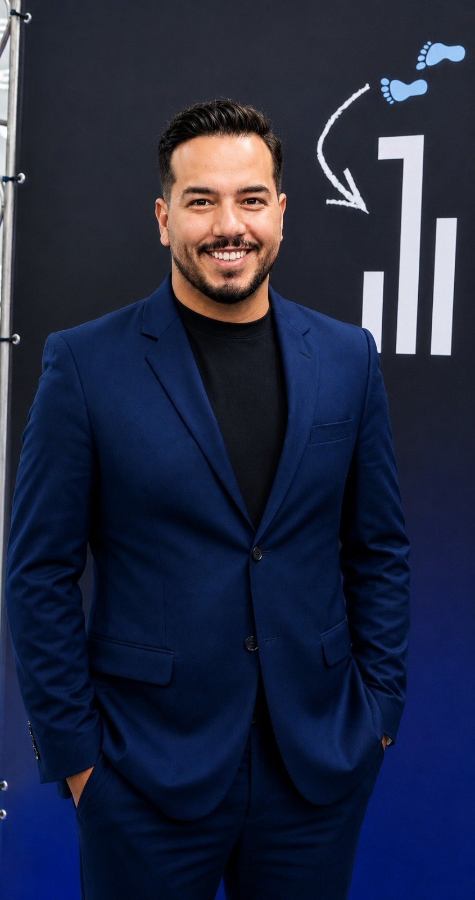

Inscrições abertas
Garantir vaga
O Método Coy ensina a técnica e o posicionamento que fazem seus pacientes pagarem pelo valor que você realmente merece. Chegou a sua vez de brilhar na odontologia estética.

Você, Cirurgião(ã)-Dentista: é assim que seus pacientes podem sair do seu consultório.
Caso de resina que não dura, vira retorno, ajuste e tempo perdido que você não cobra.
Sem critério técnico claro, cada caso é um recomeço — e a confiança do paciente (e a sua) fica em xeque.
Sem posicionamento, seu preço fica refém da concorrência, não da qualidade que você entrega.
O que não tem método não tem previsibilidade.
Dentistas em início de carreira que querem começar na estética já com a técnica certa, sem perder tempo com tentativa e erro.
Profissionais que já fazem resina e entregam resultados razoáveis, mas sabem que podem ir muito além com o método certo.
Quem quer cobrar mais e tem habilidade, mas não sabe como se posicionar pra que o mercado pague o que vale.
Quem quer se destacar e está cansado de ser mais um, querendo construir uma reputação que atrai pacientes por indicação.
Fature mais. Trabalhe menos. Entregue resultados únicos.

Resultados em resina com naturalidade que os pacientes não acreditam que é resina.

Domine a estratificação com a previsibilidade que fideliza o paciente e te diferencia da concorrência.

Aprenda a se apresentar, precificar e comunicar de um jeito que seus pacientes paguem pelo valor que você entrega.
Construa uma reputação que enche a agenda de pacientes que chegam por indicação, não por preço baixo.
Antes e depois de pacientes atendidos por alunos da mentoria.
Arraste para ver mais casos
Lentes de resina composta — Método Coy
Lentes de resina composta — Método Coy
Lentes de resina composta — Método Coy

Lentes de resina composta — Método Coy

Lentes de resina composta — Método Coy

Lentes de resina composta — Método Coy

Lentes de resina composta — Método Coy
Lentes de resina composta — Método Coy

Lentes de resina composta — Método Coy

Lentes de resina composta — Método Coy

Dois profissionais que já passaram pelo que você está vivendo e hoje ensinam o caminho.
Especialista em estética dental e co-criadora do Método Coy, Thaís traz um olhar clínico apurado e uma didática que simplifica o complexo. Acompanha cada aluno de perto para garantir que a técnica seja absorvida na prática.

Criador do Método Coy, Roberto passou anos entregando bom trabalho sem ser valorizado. Até entender que técnica de excelência + posicionamento certo muda tudo. Hoje ensina dentistas a dominarem as lentes de resina e a cobrarem o que realmente valem.
Nove módulos que constroem você do fundamento à entrega final, com técnica e posicionamento em cada etapa.
Base técnica sólida para dominar o material e entender seu comportamento clínico.
Como escolher a combinação exata para resultados com naturalidade impecável.
Planejamento do caso, mock-up e comunicação com o paciente antes do procedimento.
O passo a passo da estratificação que gera o resultado natural do Método Coy.
Protocolo de acabamento que dá o brilho e a textura de dente natural.
Aplicação em dentes anteriores com foco em lentes e facetas diretas em resina.
Registre seus casos com qualidade profissional para portfólio e redes sociais.
Como se apresentar, precificar e atrair os pacientes certos para o seu consultório.
Acompanhamento prático de casos reais com mentoria direta dos instrutores.
Guia curado de resinas, adesivos e instrumentais com o melhor custo-benefício.
Grupo exclusivo com os instrutores e colegas de turma para tirar dúvidas e trocar casos.
Certificado do Instituto Coy para agregar ao seu currículo e credibilidade profissional.
Além de todo o conteúdo da mentoria, você ainda leva:
Modelos prontos de apresentação de orçamento que comunicam valor e justificam seu preço.
Checklist de equipamentos e configurações para fotografar seus casos com qualidade profissional.
Tudo que você precisa saber antes de garantir sua vaga.
O Método Coy já transformou a carreira de dezenas de dentistas. Não fique pra trás enquanto outros se destacam com a técnica e o posicionamento certos.
Vagas limitadas · inscrições abertas por tempo limitado Quero garantir minha vaga agoraAo clicar, você será direcionado para a página de inscrição